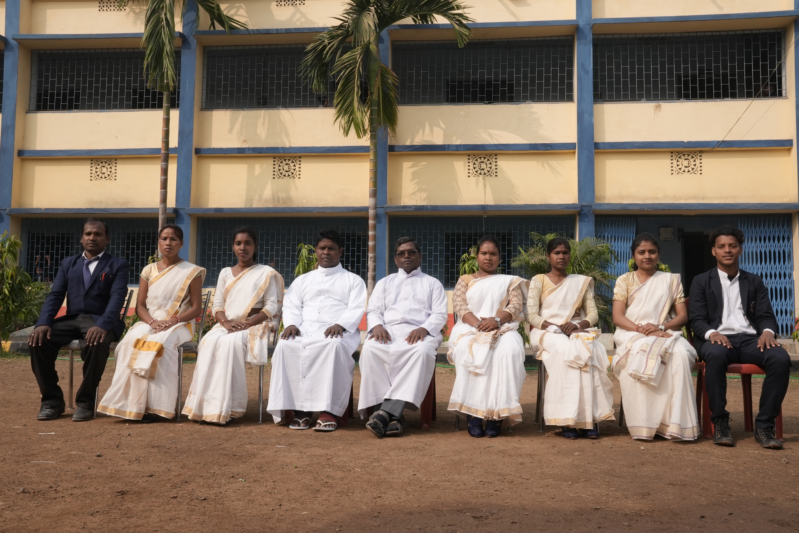

Growing minds with values, wisdom & compassion.
St. Joseph's School, Torai is established and administered by Dumka Catholic Diocese. The school was blessed and inaugurated on 11th April, 2017 by Most Rev. Julius Marandi, Bishop of Dumka.
Dumka Catholic Diocese runs several schools in Jharkhand and West Bengal, educating children of every creed, social class, community and linguistic background through English and regional languages.
The school is a *Christian Minority Institution* under Article 30(1) of the Constitution of India. It primarily serves Christian students, but welcomes children from all backgrounds with equal respect for their religious beliefs.
